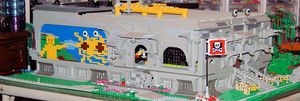
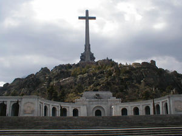
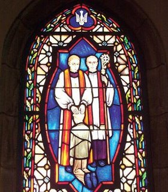
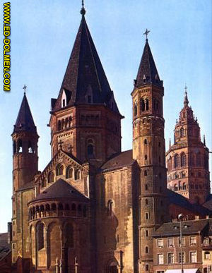

Catedral
 De: La Frikipedia, la enciclopedia extremadamente seria.
De: La Frikipedia, la enciclopedia extremadamente seria.
 Catedral Pastafarista de Lego
 Esto no es una catedral. Es más bien un templo del mal
Una catedral es aquella iglesia, generalmente construida en la Valle de los Caídos a pesar de haber sido construido de piedra, por prisioneros puteados y en un régimen con una mentalidad medieval NO es una catedral, ya que no tiene campanas.
Partes de una catedral
 Vidriera de la catedral de Santa Felatriz, en Las Vegas de Rio Piara
Las partes de toda catedral que se precie (si no sería una iglesia) son las siguientes:
- Portada: En la portada está la puerta, y si no hay puerta ¿cómo va a entrar la gente?
- Campanario: Cuanto mas gordo mejor. Para que deje de ser iglesia tiene que tener como mínimo 4 campanas. Un dato desconocido es que todas las campanas de campanarios de más de seis campanas, tocadas en un orden, suelen tocar "la cucaracha".Pero la iglesia católica lo oculta.A veces (como en la catedral de Sevilla) se puede subir, pero la entrada es aparte.
- Pobre pidiendo a la puerta: IMPRESCINDIBLE.
- Pila de hagua bendita: Se usa para que la gente se lave las manos, que pueden haber tocado al pobre (ya se sabe, los curas...)
- Incensario/Botafumeiro: (☠)¿Hueles ese pestazo a
costo incienso?(difícil no olerlo) pues sale de ese cacharro.
- Pila Bautismal: Sirve como excusa para que la familia se junte y se pueda pegar una comilona.
- Nave: Son las secciones en las que se divide. Se llaman así porque se llenan de ganado (fieles y turistas)
- Sacaperras: Cajas que piden 25 cts de limosna, velas que se encienden al echar 50cts, meta 1€ para iluminar la imagen de San Nepomuceno Mártir, 2€ para escuchar la historia de la catedral,etc.
- Vidriera: Ventanas muy horteras pintadas de colores. Sirven para que el sol no dañe la piel de las monjas.
- Bancos: De madera. Duros e incómodos, son así para que la gente no se duerma en misa. Además, tienen una tabla para arrodillarse.Hay que tener cojones para no poner cojines
- Púlpito: Llamado así por tener forma de Cartas de san Pedro a los Corintios en misa desde más altura que los oyentes. Se le suelen poner micrófonos y altavoces, "no sea que Don Agapito se nos quede afónico, el pobre".
- Altar: Una mesa hortera, con un mantel y un tapete bordado por la Hermana Gertrudis. Sirve para que el cura reparta hostias y beba vino.
- Retablo: Hortera y recargado como él solo, el retablo lleva más oros que un cani. Suele traer imágenes de la vida de Jesús de Chamberí y estar detrás del altar, para que la gente tenga algo que mirar mientras oye misa.
- Relicario: A veces dentro del retablo, suele ser una caja de 10kg de oro y plata, con una "reliquia" como pueden ser lentejas de la última cena, un suspiro de san José o el prepucio de Cristo (Nota:Juro por mi colección de cómics, que todas ellas existen)
- Confesionario: Antiguamente, servía para ir contando intimidades al cura y que este lo contara en la partida. Ahora sirve para que el cura esté entretenido o escuche el partido.
- Capilla: Una iglesia enana dentro de una Iglesia (o catedral). Sirve para que los fieles recen cuando lo demás esta ocupado por un rebaño de turistas
- Claustro: Sitio en el que te cobran aparte de la entrada a la catedral, sólo para ver un cuadrado de hierba rodeado de arcos y con un pozo seco en el medio.
- Sacristía: Lugar donde el cura y los monaguillos pasan su tiempo libre...
- Ábside: Sirve para indicar que se acaba la catedral, y para ahorrar a los turistas el tener que dar la vuelta, ya que pasas de la nave izquierda a la derecha y viceversa.
- Museo de Arte Sagrado: Sitio con entrada aparte, en el que se destroza una capilla para meter dentro de cristales antibala, objetos, que siguiendo la caridad de la iglesia católica y vendiendo la mitad, serviría para acabar con el hambre en el mundo. Pero es que "quedan tan bonitos...".
- Cámara Santa™: Solo en Oviedo (ciudad con catedral manca). Sitio con entrada aparte, que pagas para ver una sala con pinta de bunker antiaéreo de piedra, sin ventanas, con cuatro baúles apolillados metidos en cristal antibalas.
Arquitectura de las catedrales
 Catedral de
Maguncia, mandada construir por Exuperancio III
Las catedrales, dependiendo del año en el que fueron empezadas tienen diversos estilos arquitectónicos.Licenciados en Historia del Arte, observen como han perdido el tiempo estudiando 10 Siglos de historia y unos cuantos años de su carrera cuando se pueden resumir en menos de 5 minutos:
Prerrománica
Esta epoca, también conocida como chabolismo aquitectónico, consiste en hacer las iglesias como casas de piedra. Si tienes alguna duda, sube en coche el Naranco (que no el Naranjo, a ver si hay huevos a suirlo en coche) por la noche, que no hay gente sacando fotos, y a ver si distingues el palacio y la iglesia de una casa de pueblo.
Románica
Sobre el siglo XI, la gente decide hacer catedrales. Como se les caían todas y no se reparaba en piedra, ¡hala! a rellenar. Así se veían después muros de un metro, ventanas de un palmo, todo sin luz y los cristos anoréxicos.Los techos se hacen con forma de media escopeta. Estas catedrales se parecen a un refugio antiaéreo, por lo que este periodo, también se llama Bunkeránico.
Gótica

Estos
oscuritos no tienen ni idea de historia del arte tampoco. El gótico es color, no negro
Nada que ver con que estuvieran pintadas de negro (menos la de Oviedo hasta hace unos años). Recibe su nombre porque el cemento se ponía gotica a gotica. En el siglo XIII, la gente se aburre de tener que agacharse para rezar, y de que la mitra de los obispos les rompa la escayola, Deciden hacer las catedrales muy altas, llenarlas de chirimbolos raros, iluminarla, poner vidrieras para no dañar a las monjitas, y hacer los techos triangulares redondeados, para que pase bien la mitra del obispo.Los cristos y santos siguen anoréxicos, pero con menos cara de sueño.
Renacentista
A partir del siglo XIV, se decide recargar más las catedrales. Se empiezan a pintar figuras a color por todas partes, y a hacer cúpulas para que incluso pueda entrar el papa. Esto se puede ver en la Basílica de san Pedro, en el Vaticano®. Cuartel general de Ratzinguer Z, el pedazo de cúpula que hubo que meter para que el papa de la época pudiera saltar en su tabla diaria de gimnasia.Los santos siguen flacos, pero oye, bien proporcionados.
Barroca
En el siglo XVII, el papa y los obispos dejan de usar mitra y se pasan a la boina. Esto supone el recargamiento y horterizamiento mayor de las catedrales. Las señoras de la limpieza se cagan en la madre que parió a la curia en pleno, pero por suerte para ellas, la inquisición pierde poder. En esta época las cúpulas, aunque ya sin uso, se ahuevan, para poder adornar el espacio que dejan.Hacia el siglo XVIII Jean Paul du le Rococó, descubre una pintura dorada. Entonces empiezan a meter más dorados que en un anuncio de limpiametales en las catedrales, naciendo así el estilo Rococó. Los santos y cristos van entrando un poco en carnes.
Neoclásico
Desde el siglo XIX hasta el XX, los arquitectos no se les ocurre nada nuevo y empiezan desde el clásico. O sea, vuelta a Roma y a Grecia. Después siguen con el neo pegando un salto hacia el neogótico, neoliberalismo... Después la gente empieza a aburrirse de la arquitectura religiosa y se pasa a la civil. A principios del siglo XXI, la aparición de medios técnicos para la frikipedia, abre al mundo una gran fuente de sabiduría. Las conversiones en masa al pastafarismo provocan el auge de las catedrales pastafaristas, aunque sean de piezas de lego.
Enlaces Externos
Autor(es):
- Nexo
- Jowsh
- Doctor grijander
- Azulejos
- Veni Vidi Vici
- Frikipedia de mierda
- Dark temptation
- 62666
- Shadowmura
- Generibot
Frikipedia 2005-2016, Licencia
GFDL 1.2 - Extraído por FrikiLeaks